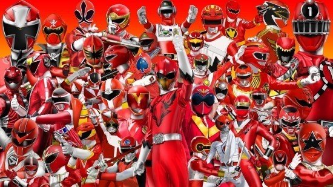

토에이에서 제작하고 테레비 아사히와 제휴 지역국에서 방송하는 특촬 시리즈. 울트라 시리즈, 가면라이더 시리즈와 함께 일본 특촬물의 3대 시리즈 중 하나이다. 
초창기의 특촬물이 혼자서, 혹은 동료와 함께 둘이서 싸우는 히어로, 즉 가면라이더를 필두로 원톱-투톱 체제를 유지하고 있었던 걸 변경해서 '여러 명이 협력해서 싸운다'를 모티브로 제작된 시리즈이다. 상업적으로는 당시 1인체제 혹은 2인체제의 가면라이더로는 완구의 상품성도, 경쟁력에도 한계가 있기에 '팀'을 이루어 싸워 장난감을 더 많이 팔기 위함이다. 즉 슈퍼전대 시리즈의 시작은 가면라이더 팀을 요구한 토에이였다.